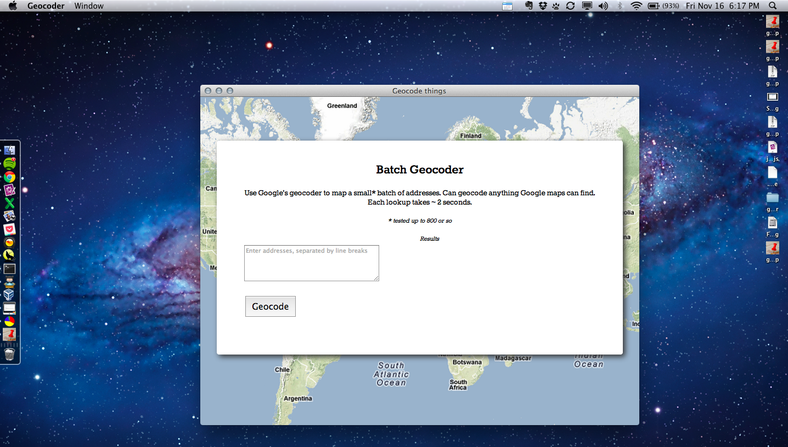
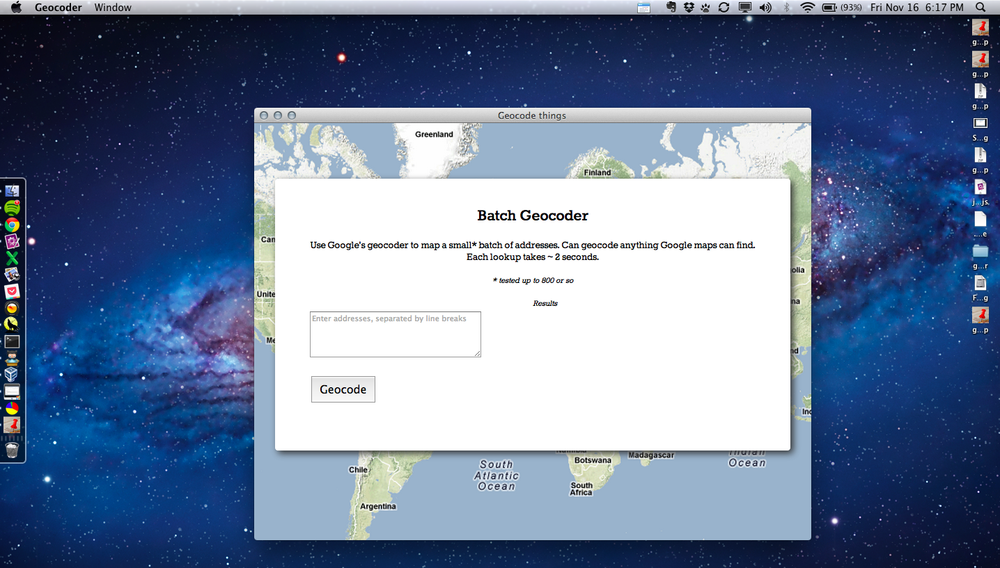

Geocoder
It's a standalone app to do Geocoding built off of AppJS and Google's JS Maps API.
Yup. You download it and it works, here's what it looks like:
Pretty sick eh?
Available for
It's a standalone app to do Geocoding built off of AppJS and Google's JS Maps API.
Yup. You download it and it works, here's what it looks like:
Pretty sick eh?
Available for